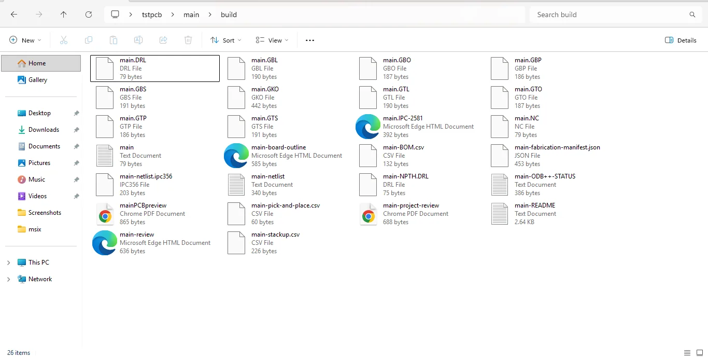

Design with control
Place parts, route copper, shape the board, use layers and grid snap, and tailor navigation, colors, keys, and panels to your working style.
Build the board, inspect it in 3D, explore supported circuit behavior, run basic checks, and release checked manufacturing artwork — inside one focused Windows desktop application.

live from Run — a motor at 7,398 rpm, one fault flagged
Professional tools are judged by the quality of the decisions they support. Unmild Designer is built around clear workflow stages, explicit capability boundaries, and output that tells you exactly what it is.
Place parts, route copper, shape the board, use layers and grid snap, and tailor navigation, colors, keys, and panels to your working style.
Inspect the board in 3D, use the Run view for supported circuit behavior, and bring basic PCB DRC and schematic ERC together in Verification.
Export checked Gerber X2 and Excellon data with review material and a release manifest. Preview-only and unavailable formats are identified, not disguised.
A clear path from canvas to release, with each stage explained rather than hidden behind generic “all-in-one” claims.
Place parts from the built-in library, route traces with the wire tool, and shape the board outline.
Review the board in 3D and run the current basic PCB DRC and schematic ERC checks before release.
Use Run for supported board behavior, readings, and problem feedback; use the Analysis workbench for first-pass impedance estimates.
Release checked Gerber X2 artwork and Excellon drilling with review files and a manifest in one pass.
Run gives supported components a visible state on the board and reports concrete readings and problems. In this example, it identifies an LED current issue and suggests a series-resistor change — useful feedback while the layout is still open.
See 3D verification & Run

The component picker — internally named Saad, Sanskrit for "to call" — searches by part, value, or package and drops it wherever you click. No hunting through nested menus mid-layout.

Unmild Designer is designed to stay out of the way. Make panels float or dock, tune zoom and pan behavior, point zoom to the cursor, save navigation presets, and remap command keys.

After basic DRC passes, export produces Gerber X2 artwork, separate plated and non-plated Excellon drill data, review drawings, release notes, and a manifest. Formats that are preview-only or not yet supported are explicitly marked.
See the full export listUnmild Designer is a Rust-built desktop EDA product designed for the point where a layout needs more than a visual check. Inspect the board in 3D, run it, understand the fault, then export a complete fabrication package. Read the product story →
A Rust-built desktop PCB workspace for layout, 3D review, supported circuit behavior, basic verification, first-pass analysis, and manufacturing output.
Projects are saved as .tamas files inside a project folder. Exporting adds a build folder alongside it holding the fabrication output.
Run is the board-behavior view for supported components. It displays readings and reports detected problems in the context of the board. The separate Simulation workbench provides transparent DC, AC, and transient RC analysis; it is not presented as a full SPICE replacement.
After the basic DRC gate, one export produces Gerber X2 artwork, separate plated and non-plated Excellon drill data, review drawings, a release manifest, and supporting release files. IPC-2581 is a geometry preview and ODB++ is not generated.
It is available through the Microsoft Store. View Unmild Designer on Microsoft Store.
Unmild Designer is independently developed in Rust for PCB design, verification, and fabrication output. More about the product.
Download Unmild Designer from the Microsoft Store and start designing, verifying, and exporting in one desktop workflow.